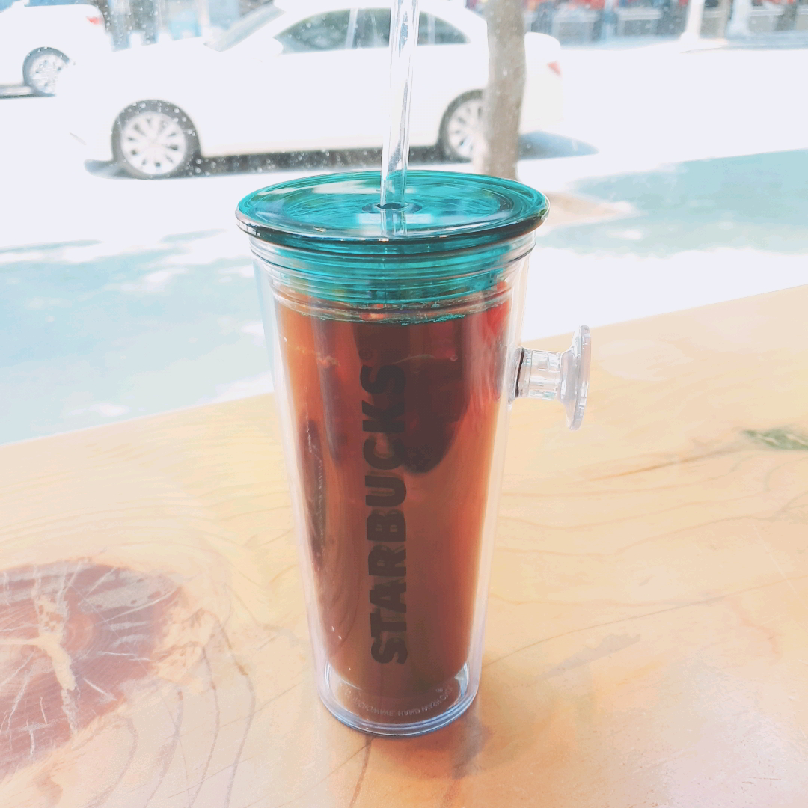

요즘에도 스타벅스에는 사람이 많아요.
2020.06.04
 다이어트를 시작하고 스타벅스에서 아메리카노를 자주 마십니다. 커피를 그리 좋아하는 편은 아니지었지만, 운동하는 곳 바로 앞에 스타벅스가 있기에 가끔씩 들러 사마시게 됩니다. 하지만 코로나와 같은 시국은 전혀 생각이 들지 않을 정도로 스타벅스 안에는 사람으로 늘 북적입니다. 여기만 오면 코로나 아닌 것 같다는 생각이 들 정도입니다. 물론 주로 테이크아웃을 하기 때문에 상관없습니다. 스타벅스가 정말 인기 최고라는 것을 다시 한 번 실감하게 되는 것 같습니다.